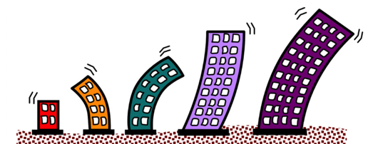
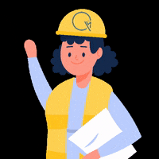

Aplicativo didáctico de dinámica estructural
La importancia del estudio de la dinámica estructural radica en el análisis del efecto de las fuerzas externas que pueden verse reflejadas en eventos sísmicos o fuertes vientos. Ahora bien, generalmente se ha dicho que las edificaciones construidas con mucha rigidez se van a mantener en reposo, sin embargo, esto no sucede de esa forma pues las estructuras se están moviendo de forma constante.

Fuente: https://www.pngwing.com/es/free-png-tcsnh
A partir de la información anterior surge la necesidad de profundizar en el aprendizaje de la dinámica estructural, de tal manera que los usuarios tengan la capacidad de identificar los procedimientos de solución a ejemplos prácticos relacionados con pórticos simples amortiguados sometidos a un evento sísmico y mejorar la interpretación de los resultados obtenidos. Por lo tanto, en el presente proyecto se llevó a cabo el diseño de un software didáctico gratuito implementado en una página web con el objetivo de complementar los conocimientos relacionados con la dinámica estructural; es decir, que el software se encargará principalmente de facilitarle al ususario el desarrollo de un ejercicio práctico aplicando los conocimientos adquiridos de manera teórica. De igual manera, esta herramienta además de realizar cálculos de tipo numérico, se encarga de graficar el pórtico con sus desplazamientos máximos, debido a que, en la teoría, el movimiento se representa con flechas en imágenes estáticas, provocando que el usuario no alcance a percibir de manera adecuada la ocurrencia del fenómeno.

Fuente: https://giphy.com/explore/construccion-sostenible